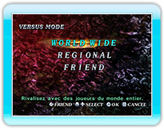
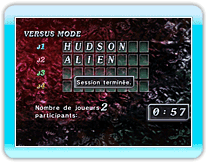
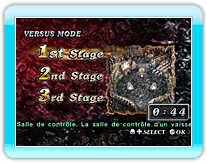
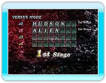
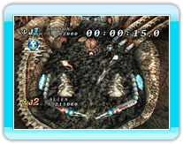
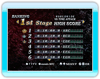

13 |
VERSUS MODE |
 |
|
Dans ce mode, vous affrontez d'autres joueurs à l'aide de la connexion Wi-Fi Nintendo. Sélectionnez ce mode pour vous connecter automatiquement à la connexion Wi-Fi Nintendo.

● WORLD WIDE
● REGIONAL
● FRIEND
Une fois que vous avez
sélectionné le groupe avec lequel jouer, les autres joueurs peuvent participer à votre session. Si personne ne vient, la partie est annulée et vous êtes déconnecté. Appuyez sur Lorsqu'il y a assez de joueurs, chacun décide du niveau à jouer (la majorité l'emporte).
* Si le vote se solde par un
* Vous ne pouvez pas sélectionner
Une fois que le niveau a été choisi, la partie commence. Une fois que le joueur a
terminé la partie, il peut voir son classement actuel.
Ce mode se joue en
contre-la-montre. Jouez spécifique de points (10 millions).
L'écran des résultats affiche vos 30 meilleurs scores.
Si vous obtenez votre meilleur score lors d'une partie contre un autre joueur via la connexion Wi-Fi Nintendo, celui-ci peut être enregistré au classement connexion Wi-Fi Nintendo. Si votre score est enregistré, vous pouvez voir votre place au classement ainsi que celui des 30 autres joueurs proches de votre niveau. |
 |
 |